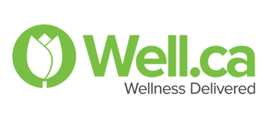
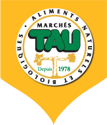
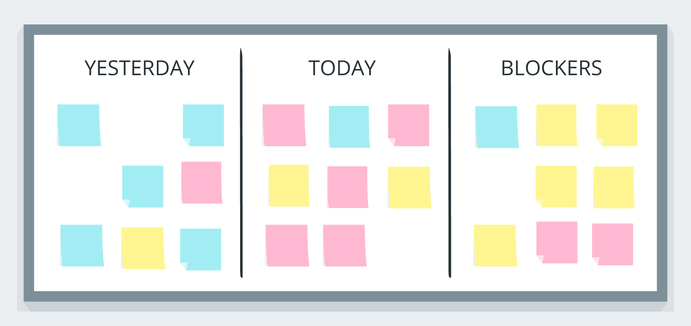
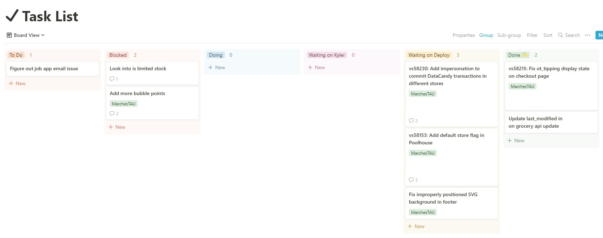

From May 2022 to August 2022, I had the opportunity to
work at Tulip remotely.
Specifically, I worked on the Well.ca
team and the Tulip Grocery Platform. Throughout these 4 months,
I learned a lot about payment processing and API integration, as well as
Docker and streamlining the development environment.
This position was remote, so I had the opportunity to work from home. Tulip
hosted a summer event in Toronto, where I had the opportunity to meet the
other interns and the rest of the team.
About Tulip
Tulip is now a company of many products and solutions
targeting international fashion giants. A small list of
their clients include Chanel, Tory Burch, Boggi Milano,
Missoni, Mulberry, and more. Based in Kitchener, Ontario and
now WFH-first, it is expanding rapidly and growing it's pool
of talent.
At a high-level, Tulip is a SaaS company. They provide a
custom POS and clienteling solution to such fashion
companies on a subscription-based monetization model.
One of Tulip's lesser known products is their e-commerce and
Grocery platform. The largest client on the e-commerce
platform is Well.ca. Well.ca is a retailer based in Guelph
that sells health, beauty, baby, home, and green and natural
products. The majority of my work was on Well.ca.
The Tulip Grocery platform is the newer version of the
monolithic e-commerce platform that runs Well.ca. The
platform provides an end-to-end grocer solution including
e-commerce (frontend), e-commerce management (backend),
intelligent Multiplex fulfillment and distribution system,
purchase order system, and more.


Job Description
I decided to return to Tulip after working 8 months in 2021.
I'm glad I did as I learned a lot and accomplished more than I
had imagined. I worked on many features; these
contributions consisted of small and large features across
10+ repositories. The tech-stack included PHP (CodeIgniter),
JavaScript, ExtJS, MySQL, Apache Solr, beanstalkd.
Additionally, I worked directly with business stakeholders
and external vendors allowing ideas to flow freely; this was
particularly important when I was working on the PayPal
integration project.
Below, I list some significant changes that benefitted me as
a developer, further expanding my skill set.
Daily Standup
On a daily cadence, our team would meet virtually at 10:00am
to hold a scrum/standup. Here, each team member would
discuss three points of information:
What we worked on the work-day prior
What we are going to work on today
What, if anything, is blocking our work?

In order to organize my work and thoughts prior to our
standup, I used an app called
Notion. In Notion, I
utilized the Kanban-style board feature. For each task, I
would create a card and sort it Trello-style with columns
such as To-do, Blocked, Working on, Ready for Deployment, and
Complete. This way, I can keep track of work that needs to
be done and work completed. If I get stuck on something, it
goes to the Blocked column. This proved to be largely
beneficial to my morning standup fluency and transparency. I
also added a flag on each card to indicate which project it
was related to.

Notion Kanban board created by me
PayPal Integration Project
During my time at Tulip, I have had the opportunity to work
on a plethora of interesting and challenging problems. One
highlight of my work term has been the PayPal integration project.
This project involved integrating PayPal into Well.ca's checkout flow.
The project was a large undertaking, and I was able to work on it from start to finish.
I worked with the business stakeholders to understand the requirements and
then worked with the external vendor to implement the integration.
Since Well.ca receives thousands of orders per day, it was important to ensure that the
integration was robust and reliable. I worked with the business stakeholders to ensure that
the integration was tested thoroughly. I also worked with the external vendor to ensure that
the integration was verified on their end.
PayPal Logo, paypal.com
Vagrant-to-Docker Conversion
When me and the other co-op students received our Tulip equipment,
we realized that they are the new M1 Macs. This meant that we could not
use Vagrant to run our development environment as it utilized VirtualBox.
VirtualBox is not supported on M1 machines and therefore, we had to find a new solution.
I worked with the other co-op students to convert our Vagrant environment to Docker.
This was a large undertaking as I had to split up the monolithic single virtual machine
into a multi-container environment. I also had to ensure that the environment was
compatible with the version of PHP that Well.ca is using. This proved to be a challenge
as the PHP version was quite old. It was difficult to find a PHP Docker image that would
work with the M1 architecture
This opportunity also allowed me to write meaningful documentation that would help future
employees. I wrote a guide on how to set up the development environment and how to use it.
This documentation was written in Markdown and hosted on Atlassian Confluence.
Lastly, I worked on a customer facing feature that allowed customers to
purchase gift boxes. From the customer's point of view, they are purchasing
a preset gift box that contains a variety of products. From the fulfillment
and business point of view, they are selling multiple products that is wrapped
in a gift box. This was a challenging feature to work on as it involved
a lot of business logic and required a lot of testing.
Goals and Outcomes
Work Term Learning Goals
Personal Goal: This term, I would like to improve my
technical writing skills. From the get-go I am tasked with
getting a legacy codebase up-and-running on new M1/Apple Silicon-based
machines in a Docker environment. To make this process accessible
(once I leave), I will need to write documentation highlighting this process.
Doing this will improve my technical writing skills. I will be able to
measure my success based on the feedback received on the piece I will write.
Goal Reflection: Overall, I would consider this a success.
I was able to port the monolithic development environment (running
on a single Vagrant-based virtual machine) to a multi-container
Docker environment. I was able to write detailed documentation
highlighting the process. I received positive feedback from my
manager and the team. I was able to use this documentation to
help onboard two other co-op students.
Personal Goal: I would like to work on a project/product with a
modern tech-stack. In my previous terms, I was working with legacy PHP
code and would like to devote some time during my term to improving my
knowledge of modern frontend and backend frameworks. I plan on getting
involved in a project within the company that uses a modern tech stack
by working with my manager to decide on tasks or tickets that need to
be completed.
Goal Reflection: Unfortunately, I was not able to work on a
project that used a modern tech stack. The client needs of the main
project our team focuses on took priority.
Teamwork Goal: It would be a great opportunity to be able to
plan and implement a large feature from start to finish. With talks of
PayPal being re-implemented on Well.ca, I may have the opportunity to
scope the project by breaking it into meaningful pieces, plan my
implementation, and additionally learn a lot regarding the checkout and
payment flow. Achieving this will give me a higher level understanding
of system design that is core to any e-commerce platform
Goal Reflection: This goal was a success as I was able to work
and complete the PayPal integration. I started by working with the business
stakeholders to understand the requirements and then started scoping the
project. I then worked with the external vendor to ensure that the integration
was working as expected.
Conclusion
All-in-all, this work term was a great learning experience. I was able to
work on a large project that had a large impact on the company. I was able
to work with a team of talented individuals and learn a lot from them. The
Tulip team welcomed me back with open arms. I felt just as much a part
of the team as my full-time co-workers. Considering I was well-versed in the
Tulip product prior to joining, I was able to hit the ground running. I was
able to contribute to the team from day one.
Acknowledgements
I would like to thank my managers, Dawid and Eugene for
allowing me back and mentoring me throughout my
time at Tulip. They continue to set the bar so high that I am
curious to know what my future work experience will offer.
Additionally, the help and support from every person on my
team was immensely constructive to my technical skills and
soft skills.